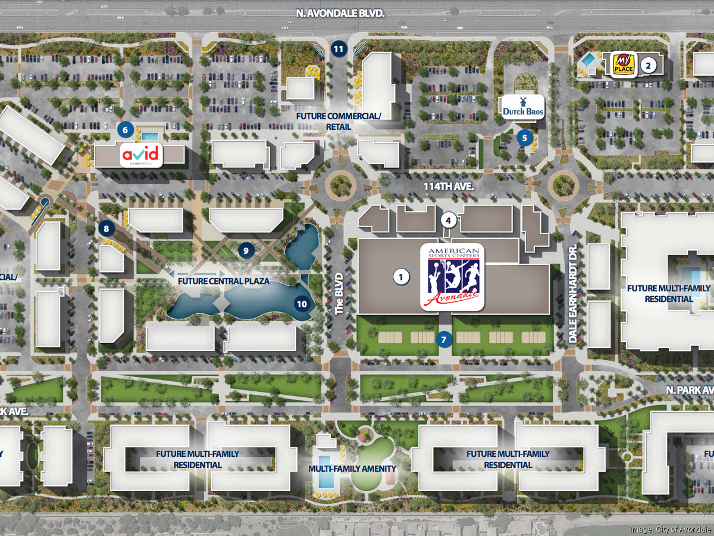

Governance
Citizen Participation
Introduction: Ensuring secure and private voting is essential for citizen participation in governance.
Algorithm: Secure Multi-Party Computation
Description: This algorithm allows multiple parties to compute a function over their inputs while keeping those inputs private.
Analysis: High security and privacy but complex implementation and requires high computational power.
IT Connectivity and ICT Enabled Services
Introduction: Optimizing network traffic and connectivity is crucial for IT connectivity and ICT enabled services.
Algorithm: Network Flow Algorithms (e.g., Ford-Fulkerson)
Description: These algorithms optimize the flow of data through a network.
Analysis: Efficient network optimization but scalability and handling dynamic changes in network traffic can be challenging.
Built Environment
Mixed-use Development
Introduction: Optimizing land use for mixed purposes (housing, offices, shops) can be achieved using Genetic Algorithms.
Algorithm: Genetic Algorithm
Description: This algorithm mimics the process of natural selection to find optimal solutions.
Analysis: Flexible and adaptable but requires tuning of parameters and may converge slowly.
Compactness and Public Open Space

Introduction: Optimizing spatial layout for compactness and open spaces can be achieved using Simulated Annealing.
Algorithm: Simulated Annealing
Description: This algorithm searches for a good approximation to the global optimum in a large search space.
Analysis: Good for large, complex optimization problems but may require many iterations to find an optimal solution.
Housing and Inclusiveness

Introduction: Allocating housing resources efficiently can be achieved using Dynamic Programming.
Algorithm: Dynamic Programming (e.g., Subset Sum Problem)
Description: This algorithm solves problems by breaking them down into simpler subproblems.
Analysis: Provides optimal solutions but has high memory usage for large datasets.
Social Aspects
Education

Introduction: Assigning educational resources efficiently can be achieved using the Assignment Problem algorithm.
Algorithm: Assignment Problem (Dynamic Programming)
Description: This algorithm finds the optimal assignment of resources to tasks.
Analysis: Finds optimal assignments but complexity increases with the number of resources and constraints.
Health

Introduction: Optimizing the placement of healthcare facilities can be achieved using k-D Trees.
Algorithm: k-D Tree
Description: This algorithm is used for organizing points in a k-dimensional space.
Analysis: Efficient spatial queries and nearest neighbor searches but performance may degrade with high-dimensional data.
Safety and Security
Introduction: Finding the shortest path for emergency response can be achieved using A* Search.
Algorithm: A* Search
Description: This algorithm finds the shortest path to a target node using heuristics.
Analysis: Efficiently finds the shortest path but requires accurate heuristics to be effective.
Culture and Economy
Identity and Culture

Introduction: Recommending cultural events and heritage sites can be improved using Content-Based Filtering.
Algorithm: Content-Based Filtering
Description: This algorithm recommends items based on user preferences and characteristics.
Analysis: Provides personalized recommendations but may suffer from limited content diversity.
Public Spaces

Introduction: Optimizing the allocation of public spaces can be achieved using the Hungarian Algorithm.
Algorithm: Hungarian Algorithm
Description: This algorithm finds the optimal assignment in a weighted bipartite graph.
Analysis: Efficient for small to medium-sized problems but performance may degrade with larger datasets.
Economy

Introduction: Predicting economic trends can be achieved using Time Series Analysis.
Algorithm: Time Series Analysis (e.g., ARIMA)
Description: This algorithm models and predicts future values based on past data.
Analysis: Accurate for short-term predictions but may require frequent updates with new data.